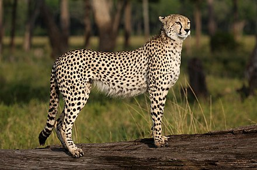
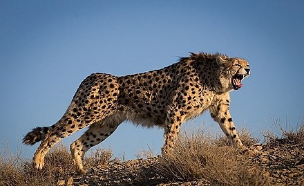
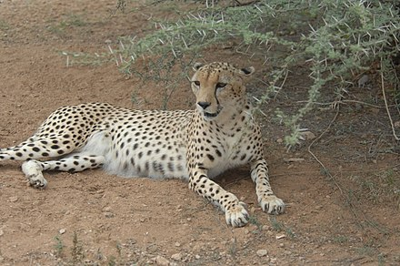

Cheetah
The cheetah (Acinonyx jubatus) is a large cat with a tawny to creamy white or pale buff fur that is marked with evenly spaced, solid black spots. Its head is small and rounded, with a short snout and black tear-like facial streaks. It reaches 67–94 cm (26–37 in) at the shoulder, and the head-and-body length is between 1.1 and 1.5 m (3 ft 7 in and 4 ft 11 in). Adults weigh between 21 and 72 kg (46 and 159 lb). It is the fastest land animal, capable of running at 80 to 98 km/h (50 to 61 mph); it has evolved specialized adaptations for speed, including a light build, long thin legs and a long tail.
The cheetah was first described in the late 18th century. Four subspecies are recognised today that are native to Africa and central Iran. An African subspecies was introduced to India in 2022. It is now distributed mainly in small, fragmented populations in northwestern, eastern and southern Africa and central Iran. It lives in a variety of habitats such as savannahs in the Serengeti, arid mountain ranges in the Sahara and hilly desert terrain.
The cheetah lives in three main social groups: females and their cubs, male "coalitions", and solitary males. While females lead a nomadic life searching for prey in large home ranges, males are more sedentary and instead establish much smaller territories in areas with plentiful prey and access to females. The cheetah is active during the day, with peaks during dawn and dusk. It feeds on small- to medium-sized prey, mostly weighing under 40 kg (88 lb), and prefers medium-sized ungulates such as impala, springbok and Thomson's gazelles. The cheetah typically stalks its prey within 60–100 m (200–330 ft) before charging towards it, trips it during the chase and bites its throat to suffocate it to death. It breeds throughout the year. After a gestation of nearly three months, females give birth to a litter of three or four cubs. Cheetah cubs are highly vulnerable to predation by other large carnivores. They are weaned at around four months and are independent by around 20 months of age.
The cheetah is threatened by habitat loss, conflict with humans, poaching and high susceptibility to diseases. In 2016, the global cheetah population was estimated at 7,100 individuals in the wild; it is listed as Vulnerable on the IUCN Red List. It has been widely depicted in art, literature, advertising, and animation. It was tamed in ancient Egypt and trained for hunting ungulates in the Arabian Peninsula and India. It has been kept in zoos since the early 19th century.
Etymology
The vernacular name "cheetah" is derived from Hindustani Urdu: چیتا and Hindi: चीता (ćītā).3 This in turn comes from Sanskrit: चित्रय (Chitra-ya) meaning 'variegated', 'adorned' or 'painted'.4 In the past, the cheetah was often called "hunting leopard" because they could be tamed and used for coursing.5 The generic name Acinonyx probably derives from the combination of two Greek words: ἁκινητος (akinitos) meaning 'unmoved' or 'motionless', and ὄνυξ (onyx) meaning 'nail' or 'hoof'.6 A rough translation is "immobile nails", a reference to the cheetah's limited ability to retract its claws.7 A similar meaning can be obtained by the combination of the Greek prefix a– (implying a lack of) and κῑνέω (kīnéō) meaning 'to move' or 'to set in motion'.8 The specific name jubatus is Latin for 'crested, having a mane'.9
A few old generic names such as Cynailurus and Cynofelis allude to the similarities between the cheetah and canids.10
Taxonomy
Illustration of the woolly cheetah (Felis lanea) published in the Proceedings of the Zoological Society of London in 1877.
An illustration of the "woolly cheetah" (described as Felis lanea) from the Proceedings of the Zoological Society of London (1877).
In 1777, Johann Christian Daniel von Schreber described the cheetah based on a skin from the Cape of Good Hope and gave it the scientific name Felis jubatus.11 Joshua Brookes proposed the generic name Acinonyx in 1828.12 In 1917, Reginald Innes Pocock placed the cheetah in a subfamily of its own, Acinonychinae,13 given its striking morphological resemblance to the greyhound and significant deviation from typical felid features; the cheetah was classified in Felinae in later taxonomic revisions.14
In the 19th and 20th centuries, several cheetah specimens were described some were proposed as subspecies. An example is the South African specimen known as the "woolly cheetah", named for its notably dense fur—this was described as a new species (Felis lanea) by Philip Sclater in 1877,15 but the classification was mostly disputed.16 There has been considerable confusion in the nomenclature of cheetahs and leopards (Panthera pardus) as authors often confused the two; some considered "hunting leopards" an independent species, or equal to the leopard.17 18
Subspecies
In 1975, five subspecies were considered valid taxa: A. j. hecki, A. j. jubatus, A. j. raineyi, A. j. soemmeringii and A. j. venaticus.19 In 2011, a phylogeographic study found minimal genetic variation between A. j. jubatus and A. j. raineyi; only four subspecies were identified.20 In 2017, the Cat Classification Task Force of the IUCN Cat Specialist Group revised felid taxonomy and recognised these four subspecies as valid. Their details are tabulated below:19 21
| Subspecies | Details | Image |
|---|---|---|
| Southeast African cheetah (A. j. jubatus) (Schreber, 1775), syn. A. j. raineyi Heller, 191322 | The nominate subspecies;21 it genetically diverged from the Asiatic cheetah 67,000–32,000 years ago.20 As of 2016, the largest population of nearly 4,000 individuals is sparsely distributed in Angola, Botswana, Mozambique, Namibia, South Africa and Zambia.23 |  |
| Asiatic cheetah (A. j. venaticus) Griffith, 182124 | This subspecies is confined to central Iran, and is the only surviving cheetah population in Asia.25 As of 2022, only 12 individuals were estimated to survive in Iran, nine of which are males and three of which are females.26 |  |
| Northeast African cheetah (A. j. soemmeringii) Fitzinger, 185527 | This subspecies occurs in the northern Central African Republic, Chad, Ethiopia and South Sudan in small and heavily fragmented populations; in 2016, the largest population of 238 individuals occurred in the northern CAR and southeastern Chad. It diverged genetically from the southeast African cheetah 72,000–16,000 years ago.20 |  |
| Northwest African cheetah (A. j. hecki) Hilzheimer, 191328 | This subspecies occurs in Algeria, Benin, Burkina Faso, Mali and Niger.1 In 2016, the largest population of 191 individuals occurred in Adrar des Ifoghas, Ahaggar and Tassili n'Ajjer in south-central Algeria and northeastern Mali.25 It is listed as Critically Endangered on the IUCN Red List.29 |
References
- Durant, S.M.; Groom, R.; Ipavec, A.; Mitchell, N.; Khalatbari, L. (2022). "Acinonyx jubatus". IUCN Red List of Threatened Species. 2022: e.T219A124366642. doi:10.2305/IUCN.UK.2022-1.RLTS.T219A124366642.en.
- Krausman, P. R. & Morales, S. M. (2005). "Acinonyx jubatus" (PDF). Mammalian Species. 771: 1–6. doi:10.1644/1545-1410(2005)771[0001:aj]2.0.co;2. S2CID 198969000. Archived from the original (PDF) on 4 March 2016.
- Platts, J. T. (1884). "چيتا चीता ćītā". A Dictionary of Urdu, Classical Hindi, and English. London: W. H. Allen & Co. p. 470.
- Macdonell, A. A. (1929). "चित्रय kitra-ya". A Practical Sanskrit Dictionary with Transliteration, Accentuation, and Etymological Analysis throughout. London: Oxford University Press. p. 68. Archived from the original on 2 July 2020. Retrieved 5 April 2019.
- Marker, L.; Grisham, J. & Brewer, B. (2018). "A brief history of cheetah conservation". In Marker, L.; Boast, L. K. & Schmidt-Kuentzel, A. (eds.). Cheetahs: Biology and Conservation. London: Academic Press. pp. 3–16. ISBN 978-0-12-804088-1.
- Liddell, H. G. & Scott, R. (1889). "ἁκινητος". An Intermediate Greek–English Lexicon. Oxford: Clarendon Press. pp. 27, 560.
- Rosevear, D. R. (1974). "Genus Acinonyx Brookes, 1828". The Carnivores of West Africa. London: Natural History Museum. pp. 492–512. ISBN 978-0-565-00723-2.
- Skinner, J. D. & Chimimba, C. T. (2005). "Subfamily Acinonychinae Pocock 1917". The Mammals of the Southern African Subregion (3rd ed.). New York: Cambridge University Press. pp. 379–384. ISBN 978-0521844185.
- Lewis, C. T. & Short, C. (1879). "jubatus". A Latin Dictionary. Oxford: Clarendon Press. p. 1014.
- Meachen, J.; Schmidt-Kuntzel, A.; Haefele, H.; Steenkamp, G.; Robinson, J. M.; Randau, M. A.; McGowan, N.; Scantlebury, D. M.; Marks, N.; Maule, A. & Marker, L. (2018). "Cheetah specialization: physiology and morphology". In Marker, L.; Boast, L. K. & Schmidt-Kuentzel, A. (eds.). Cheetahs: Biology and Conservation. London: Academic Press. pp. 93–106. ISBN 978-0-12-804088-1.
- Schreber, J. C. D. (1777). "Der Gepard (The cheetah)". Die Säugthiere in Abbildungen nach der Natur mit Beschreibungen [The Mammals in Illustrations according to Nature with Descriptions] (in German). Vol. Dritter Theil. Erlangen: Wolfgang Walther. pp. 392–393.
- Brookes, J. (1828). "Section Carnivora". A Catalogue of the Anatomical and Zoological Museum of Joshua Brookes. London: Richard Taylor. p. 16.
- Pocock, R. I. (1917). "The classification of the existing Felidae". Annals and Magazine of Natural History. Series 8. XX (119): 329–350. doi:10.1080/00222931709487018.
- Caro, T. M. (1994). "Serengeti, and the taxonomy and natural history of cheetahs". Cheetahs of the Serengeti Plains: Group Living in an Asocial Species. Chicago: University of Chicago Press. pp. 15–48. ISBN 978-0-226-09434-2.
- Sclater, P. (1877). "The secretary on additions to the menagerie". Proceedings of the Zoological Society of London. 1877:May-Dec.: 530–533.
- Lydekker, R. (1893). "The hunting leopard". The Royal Natural History. Vol. 1. London: Frederick Warne & Co. pp. 442–446.
- Baker, E. D. (1887). Sport in Bengal: and How, When and Where to Seek it. London: Ledger, Smith & Co. pp. 205–221.
- Sterndale, R. A. (1884). Natural History of the Mammalia of India and Ceylon. Calcutta: Thacker, Spink & Co. pp. 175–178.
- Kitchener, A. C.; Breitenmoser-Würsten, C.; Eizirik, E.; Gentry, A.; Werdelin, L.; Wilting, A.; Yamaguchi, N.; Abramov, A. V.; Christiansen, P.; Driscoll, C.; Duckworth, J. W.; Johnson, W.; Luo, S.-J.; Meijaard, E.; O'Donoghue, P.; Sanderson, J.; Seymour, K.; Bruford, M.; Groves, C.; Hoffmann, M.; Nowell, K.; Timmons, Z. & Tobe, S. (2017). "A revised taxonomy of the Felidae: the final report of the Cat Classification Task Force of the IUCN Cat Specialist Group" (PDF). Cat News (Special Issue 11): 30–31.
- Charruau, P.; Fernandes, C.; Orozco-terwengel, P.; Peters, J.; Hunter, L.; Ziaie, H.; Jourabchian, A.; Jowkar, H.; Schaller, G.; Ostrowski, S.; Vercammen, P.; Grange, T.; Schlotterer, C.; Kotze, A.; Geigl, E. M.; Walzer, C. & Burger, P. A. (2011). "Phylogeography, genetic structure and population divergence time of cheetahs in Africa and Asia: evidence for long-term geographic isolates". Molecular Ecology. 20 (4): 706–724. doi:10.1111/j.1365-294X.2010.04986.x. PMC 3531615. PMID 21214655.
- Wozencraft, W. C. (2005). "Acinonyx jubatus". In Wilson, D. E.; Reeder, D. M. (eds.). Mammal Species of the World: A Taxonomic and Geographic Reference (3rd ed.). Johns Hopkins University Press. pp. 532–533. ISBN 978-0-8018-8221-0. OCLC 62265494.
- Heller, E. (1913). "New races of carnivores and baboons from equatorial Africa and Abyssinia". Smithsonian Miscellaneous Collections. 61 (19): 1–12.
- Durant, S. M.; Mitchell, N.; Groom, R.; Pettorelli, N.; Ipavec, A.; Jacobson, A. P.; Woodroffe, R.; Böhm, M.; Hunter, L. T. B.; Becker, M. S.; Broekhuis, F.; Bashir, S.; Andresen, L.; Aschenborn, O.; Beddiaf, M.; Belbachir, F.; Belbachir-Bazi, A.; Berbash, A.; de Matos Machado, I. B.; Breitenmoser, C.; Chege, M.; Cilliers, D.; Davies-Mostert, H.; Dickman, A. j.; Ezekiel, F.; Farhadinia, M. S.; Funston, P.; Henschel, P.; Horganv, J.; de Iongh, H. H.; Jowkar, H.; Klein, R.; Lindsey, P. A.; Marker, L.; Marnewick, K.; Melzheimer, J.; Merkle, J.; M'soka, J.; Msuha, M.; O'Neill, H.; Parker, M.; Purchase, G.; Sahailou, S.; Saidu, Y.; Samna, A.; Schmidt-Küntzel, A.; Selebatso, E.; Sogbohossou, E. A.; Soultan, A.; Stone, E.; Van der Meer, E.; Van Vuuren, R.; Wykstra, M. & Young-Overton, K. (2016). "The global decline of cheetah Acinonyx jubatus and what it means for conservation". PNAS. 114 (3): 528–533. doi:10.1073/pnas.1611122114. PMC 5255576. PMID 28028225.
- Griffith, E. (1821). "Felis venatica". General and Particular Descriptions of the Vertebrated Animals, arranged Conformably to the Modern Discoveries and Improvements in Zoology. Order Carnivora. London: Baldwin, Cradock and Joy. p. 93
- Marker, L.; Cristescu, B.; Morrison, T.; Flyman, M. V.; Horgan, J.; Sogbohossou, E. A.; Bissett, C.; van der Merwe, V.; Machado, I. B. de M.; Fabiano, E.; van der Meer, E.; Aschenborn, O.; Melzheimer, J.; Young-Overton, K.; Farhadinia, M. S.; Wykstra, M.; Chege, M.; Abdoulkarim, S.; Amir, O. G.; Mohanun, A. S.; Paulos, O. D.; Nhabonga, A. R.; M'soka, J. L. J.; Belbachir, F.; Ashenafi, Z. T. & Nghikembua, M. T. (2018). "Cheetah rangewide status and distribution". In Marker, L.; Boast, L. K. & Schmidt-Kuentzel, A. (eds.). Cheetahs: Biology and Conservation. London: Academic Press. pp. 33–54. ISBN 978-0-12-804088-1.